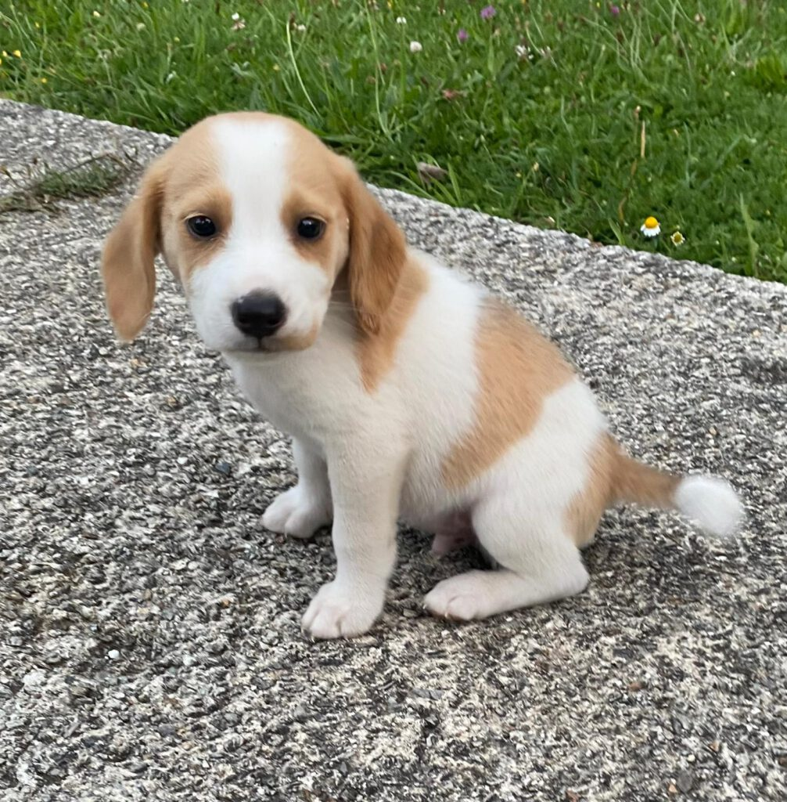
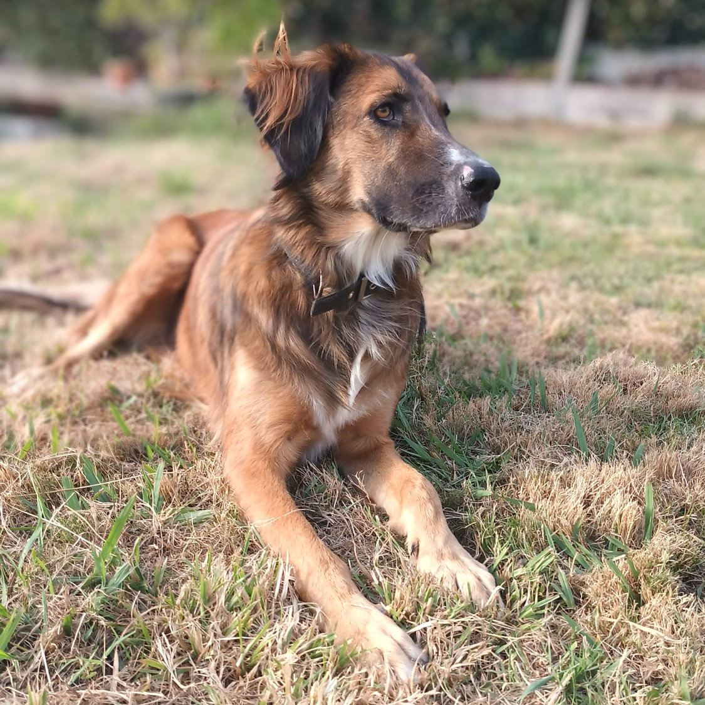
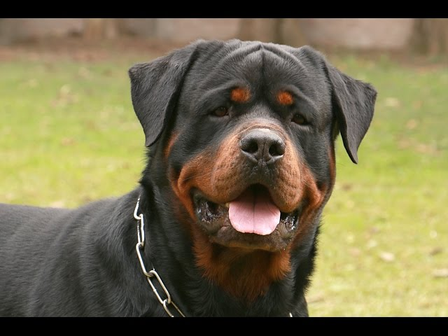
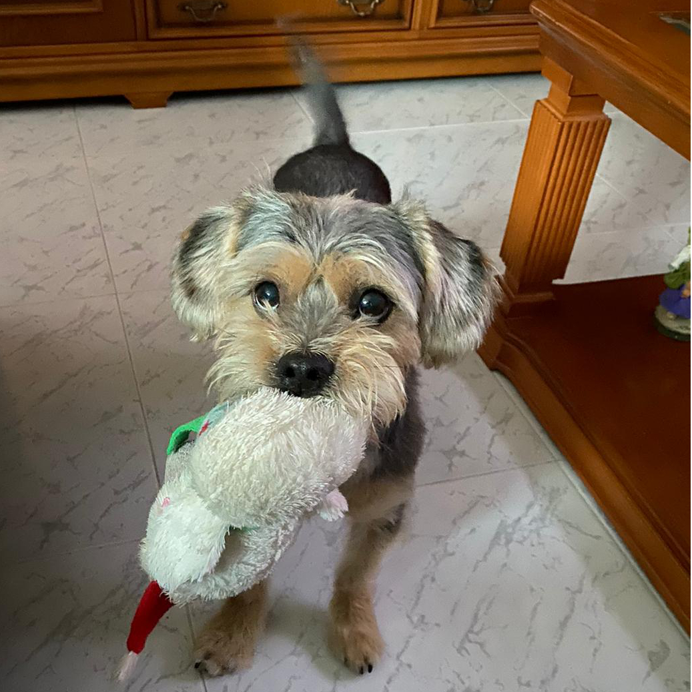
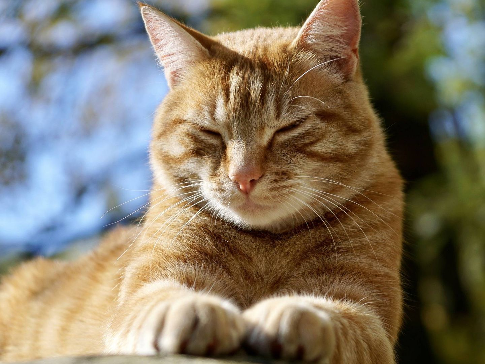
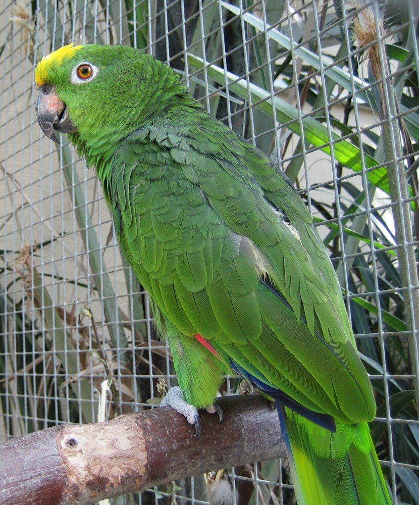

Bienvenido.
Encuentra a tu mejor amigo hoy.
Puedes elegir una mascota de esta lista para adoptar, y luego contactarnos para conocerse.
Max, el travieso explorador. Max es mitad beagle con una personalidad curiosa y juguetona. Le encanta salir a explorar el jardín y siempre está buscando nuevos olores que seguir. Su travesura favorita es escarbar las flores, aunque sus grandes ojos expresivos siempre logran que lo perdonemos. Max es muy amigable y se lleva bien con otros animales y niños, haciendo que sea el compañero perfecto para una familia activa. Aproximadamente llegar[a a pesar entre 10 y 15 kilos
Luna, la cariñosa gigante. Luna es conocida por su naturaleza dulce y amorosa. Le encanta acurrucarse en el sofá con su familia y siempre está lista para dar abrazos. Sin embargo, su tamaño y su entusiasmo a veces la llevan a derribar objetos mientras mueve su cola de un lado a otro. A pesar de su energía, es muy obediente y le encanta aprender nuevos trucos. Luna sería ideal para una familia que disfrute de pasar tiempo al aire libre.
Rocky, el guardián valiente Rocky es un Rottweiler de 40 kg con un corazón de oro. Aunque su apariencia puede ser intimidante, es extremadamente leal y protector con su familia. Disfruta de largas caminatas y juegos de búsqueda, pero su verdadera pasión es cuidar de su hogar. A veces, puede ser un poco testarudo, especialmente cuando encuentra algo que quiere proteger. Rocky necesita un dueño experimentado que pueda manejar su fuerte personalidad y energía.
Bella, la juguetona pequeña Bella pesa 3 kg y tiene un espíritu indomable. A pesar de su tamaño diminuto, tiene una gran personalidad y no duda en hacerse notar. Le encanta correr por la casa y jugar con juguetes que son casi tan grandes como ella. Su travesura favorita es esconderse en lugares pequeños y sorprender a sus dueños con ladridos alegres. Bella es ideal para alguien que busca un compañero pequeño pero lleno de vida.
Simba, el rey del sofá Simba es un gato que adora la comodidad y la tranquilidad. Su lugar favorito es el sofá, donde puede pasar horas acurrucado. Es un gato independiente, pero disfruta de los mimos y las caricias en sus términos. Su travesura más común es deslizarse en las camas recién hechas y dejar su pelaje esponjoso por todas partes. Simba sería perfecto para alguien que busque un compañero tranquilo y elegante.
Paco, el bromista parlanchín Paco es un loro Amazonas de 0.5 kg con una personalidad vibrante y divertida. Es muy hablador y le encanta aprender nuevas palabras y frases. Paco disfruta imitar los sonidos de la casa, como el timbre de la puerta o el teléfono, y a veces lo hace para sorprender a sus dueños. Su travesura más notable es abrir su jaula cuando nadie está mirando y explorar la casa. Paco necesita un dueño que tenga experiencia con loros y pueda dedicarle mucho tiempo y atención.
PerroMatch
¡Ingresa tus datos y te recomendaremos una mascota unica para vos!
IrContáctanos
¿Tienes preguntas o necesitas más información? Contáctanos y te ayudaremos con lo que necesites.
Contáctanos